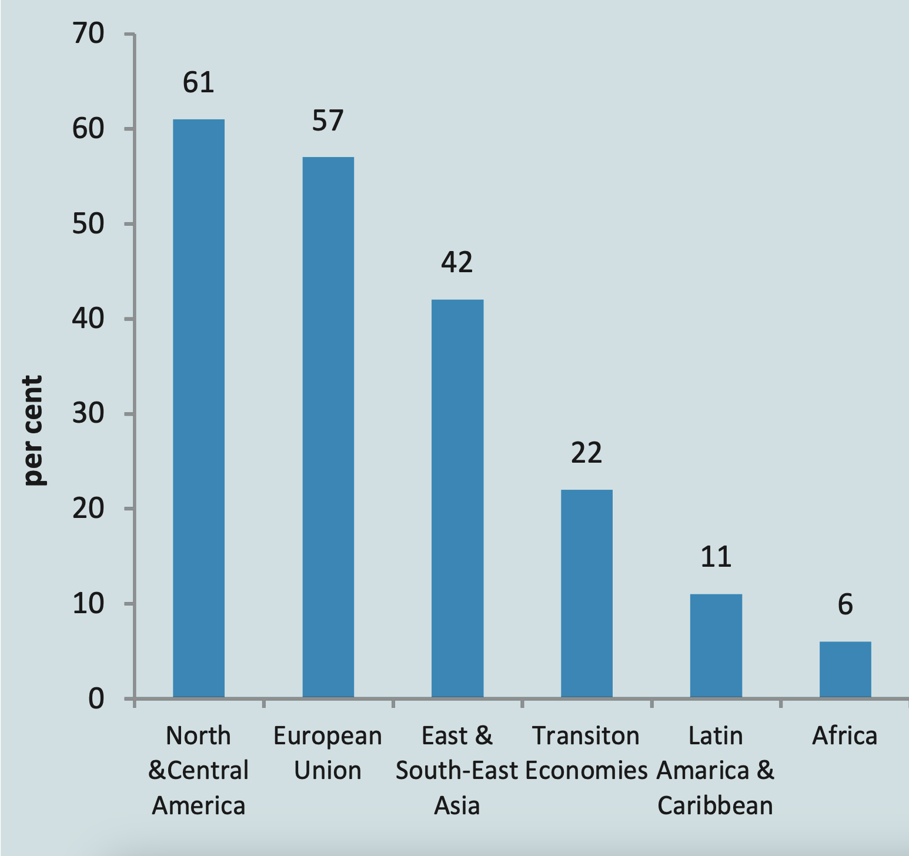
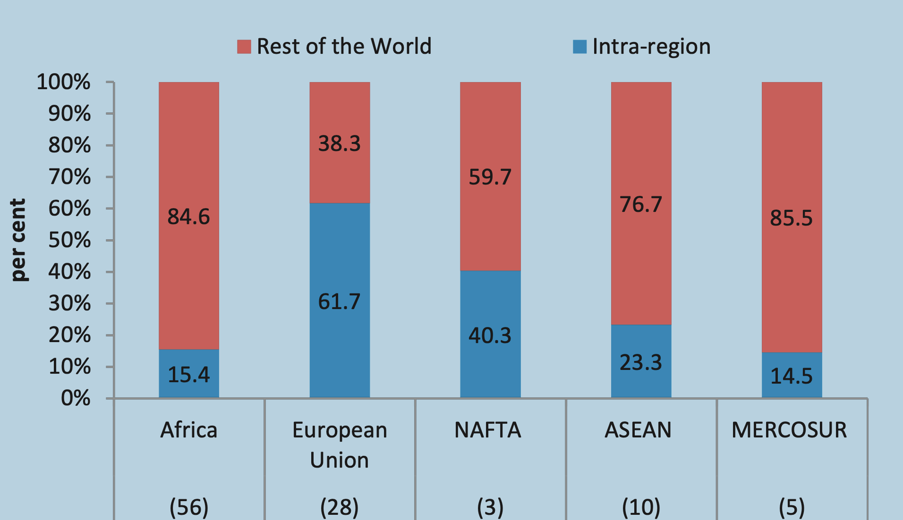
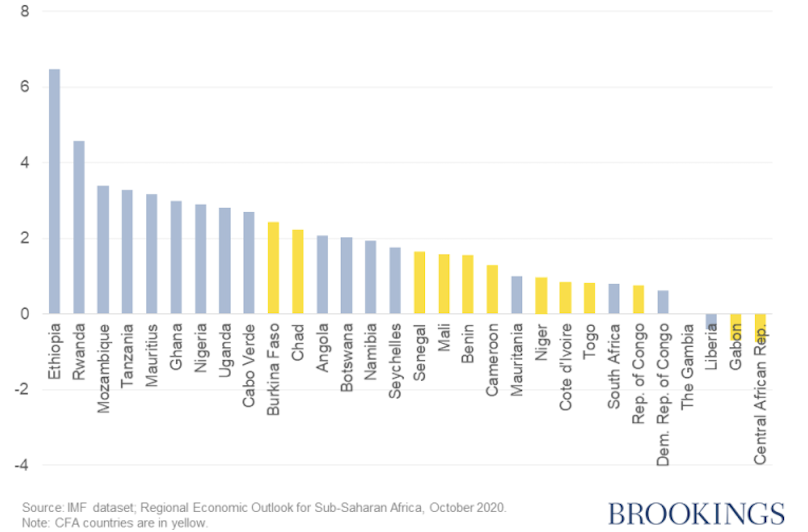

library(tidyverse)Graph Creation
Economic Integration in Francophone Africa

values <- c(61, 57, 42, 22, 11, 6)
regions <- c("North & Central America",
"European Union",
"East & South-East Asia",
"Transition Economies",
"Latin America & Caribbean",
"Africa")
gvc_flows <- data.frame(values = values, regions = regions)
gvc_flows |>
mutate(values = as.numeric(values),
regions = fct_reorder(regions, values, .desc = FALSE)) |>
ggplot() +
geom_col(aes(x = regions, y = values),
fill = "#789DBC") +
geom_text(aes(x = regions,
y = values,
label = values),
color = "white",
hjust = 1.5,
fontface = "bold",
size = 4.5) +
labs(x = "",
y = "Percent") +
theme_minimal() +
coord_flip()
# Recreating the dataset
rec_data <- data.frame(
region = c("Africa", "Africa",
"European Union", "European Union",
"NAFTA", "NAFTA",
"ASEAN", "ASEAN",
"MERCOSUR", "MERCOSUR"),
# numbers = c(56, 56,
# 28, 28,
# 3, 3,
# 10, 10,
# 5, 5),
category = c("Intra region", "Rest of the World",
"Intra region", "Rest of the World",
"Intra region", "Rest of the World",
"Intra region", "Rest of the World",
"Intra region", "Rest of the World"),
percent = c(15.4, 84.6,
61.7, 38.3,
40.3, 59.7,
23.3, 76.7,
14.5, 85.5))
# Plot
rec_data |>
mutate(category = fct_rev(category)) |>
ggplot() +
geom_col(aes(x = region,
y = percent,
fill = category),
color = "white") +
geom_text(aes(x = region,
label = str_c(percent, "%"),
y = ifelse(category == "Intra region", 7.5, 92)),
color = "white",
size = 3.9,
fontface = "bold") +
scale_fill_manual(values = c("Intra region" = "#789DBC",
"Rest of the World" = "#FA4032")) +
theme_minimal() +
labs(y = "Percent",
fill = "",
x = "") +
coord_flip()
library(tidyverse)
library(countrycode)
clean_column <- function(column) {
as.numeric(str_remove_all(column, "[:,\\.]"))
}
columns_to_clean <- c(
"X1999", "X2000", "X2001", "X2002", "X2003",
"X2004", "X2005", "X2006", "X2007", "X2008",
"X2009", "X2010", "X2011", "X2012", "X2013",
"X2014", "X2015", "X2016", "X2017", "X2018", "X2019"
)
countries <- c(
"Ethiopia", "Rwanda", "Mozambique", "Tanzania", "Mauritius",
"Ghana", "Nigeria", "Uganda", "Cabo Verde", "Burkina Faso",
"Chad", "Angola", "Botswana", "Namibia", "Seychelles",
"Senegal", "Mali", "Benin", "Cameroon", "Mauritania",
"Niger", "Cote d'Ivoire", "Togo", "South Africa", "Rep. of Congo",
"Dem. Rep. of Congo", "The Gambia", "Gabon",
"Central African Rep"
)
needed_codes <- countrycode(countries, origin = "country.name", destination = "iso3c")
gdp_growth <- read.csv("gdp_growth.csv") |>
mutate(Country = ifelse(Country == "São Tomé and Príncipe",
"São Tomé and Príncipe", Country),
code = countrycode(Country,
origin = "country.name", destination = "iso3c")) |>
filter(code %in% needed_codes) |>
mutate(Country = countrycode(code,
origin = "iso3c", destination = "country.name")) |>
select(Country, starts_with("x")) |>
mutate(across(all_of(columns_to_clean), clean_column)) |>
pivot_longer(cols = -Country,
names_to = "years",
values_to = "values") |>
mutate(years = as.numeric(str_extract_all(years, "\\d+")))
gdp_growth |>
filter(Country %in% c("Benin", "Burkina Faso", "Cote d'Ivoire",
"Mali", "Niger", "Togo", "Senegal")) |>
group_by(Country) |>
ggplot(aes(years, values, color = Country)) +
geom_smooth()